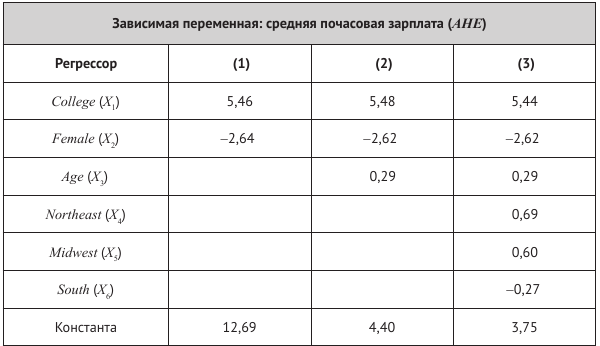

Первые упражнения относятся к таблице оценок регрессии на стр. 211, рассчитанных с использованием данных за 1998 год из текущего обследования населения (CPS). Набор данных состоит из информации по 4000 работникам занятым полный рабочий день в течение всего года. В рассматриваемой выборке присутствуют респонденты, имеющие либо аттестат средней школы, либо степень бакалавра. Возраст работника колеблется от 25 до 34 лет. В данных также содержится информация о регионе проживания респондентов, их семейном положении и количестве детей. Для целей этого упражнения обозначим:
AHE = средняя почасовая заработная плата (в долларах 1998 года).
College = бинарная переменная (1 — если респондент закончил колледж, 0 — если среднюю школу).
Female = бинарная переменная (1 — если респондент является женщиной, 0 — если мужчиной).
Age = возраст (в годах).
Northeast = бинарная переменная (1 — если респондент проживает на Северо-Востоке, 0 — в противном случае).
Midwest = бинарная переменная (1 — если респондент проживает на Среднем Западе, 0 — в противном случае).
South = бинарная переменная (1 — если респондент проживает на Юге, 0 — в противном случае).
West = бинарная переменная (1 — если регион респондент проживает на Западе, 0 — в противном случае).

Задания:
Проинтерпретируйте оцененные коэффициенты в стодбце (1).
Проинтерпретируйте оцененные коэффициенты в стодбце (2). Обсудите, является ли возраст фактором, серьезно влияющим на доходы?
Проинтерпретируйте оцененные коэффициенты в стодбце (3). Имеют ли место региональные различия? Почему регрессор West исключен из регрессии? Что бы произошло, если бы он был включен?
Объясните, почему две совершенно мультиколлинеарные объясняющие переменные не могут быть включены в модель линейной множественной регрессии. Приведите два примера пары совершенно мультиколлинеарных регрессоров.
Объясните, почему трудно точно оценить частный эффект влияния \(X_1\) на зависимую пееременную, считая регрессор \(X_2\) постоянным, если \(X_1\) и \(X_2\) тесно взаимосвязаны.
Ваша задача — исследовать взаимосвязь между медицинскими расходами и наличием страховки у человека.
Сформулируйте исследовательский вопрос.
Сформулируйте исследовательскую гипотезу.
Обсудите экономический механизм, который бы ее объяснял.
Выпишите модели парной линейной регрессии, который подходят для описания изучаемых взаимосвязей.
Обсудите проблему пропущенных переменных. К каким последствиям она может привести?
Обсудите, какие контрольные переменные необходимо включить в модель для решения проблемы пропущенных переменных.
Не забудьте загрузить необходимые пакеты.
На этом семинаре мы работаем с внешним набором данных MEPS.csv. Загрузите и изучите данные. Обсудите, какие переменные лучше всего подходят для ответа на поставленный исследовательский вопрос.
| Variable | Description |
|---|---|
| dupersid | Subject ID |
| year03 | 1 if data is from meps 2003 |
| age | Age |
| famsze | Size of the family |
| educyr | Years of education |
| totexp | Total medical expenditure |
| private | 1 if private supplementary insurance |
| retire | 1 if retired |
| female | 1 if female |
| white | 1 if white |
| hisp | 1 if hispanic |
| marry | 1 if married |
| northe | 1 if northeast area |
| mwest | 1 if midwest area |
| south | 1 if south area (west is excluded) |
| regother | 1 if other area |
| region | area (northeast, midwest, south, or other) |
| phylim | 1 if has functional limitation |
| actlim | 1 if has activity limitation |
| msa | 1 if metropolitan statistical area |
| income | annual household income/1000 |
| injury | 1 if condition is caused by an accident/injury |
| priolist | 1 if has medical conditions that are on the priority list |
| totchr | # of chronic problems |
| omc | 1 if other managed care (privately insured sample) |
| hmo | 1 if private insurance is hmo (privately insured sample) |
| posexp | 1 if total expenditure > 0 |
| suppins | 1 if has supp priv insurance |
| hvgg | 1 if health status is excellent, good or very good |
| hfp | 1 if health status is fair or poor |
| ltotexp | ln(totexp) if totexp > 0 |
| hins | Excellent health indicator |
| hdem | Demographic group indicator |
Проведите разведывательный анализ данных:
Постройте таблицу с описательными статистиками основных переменных.
Постройте графики, визуализирующие изучаемую взаимосвязь.
Можете провести дополнительный разведывательный анализ на свое усмотрение.
Проведите регрессионный анализ:
Оцените базовую модель парной регрессии.
Оцените несколько моделей множественной регрессии, последовательно добавляя в модель различные контрольные переменные. Отдельное внимание уделите категориальныи переменным.
Сведите результаты оценки всех регрессий в одну таблицу.
Проинтерпретируйте полученные результаты.
Оформите скрипт R так, чтобы он был понятным и воспроизводимым.
Проверьте гипотезу о равенстве нулю коэффициента при переменной страховки против разумной односторонней альтернативы.
Оцените модель множественной регрессии, используя матричные операции в R. Рассчитайте стандартные ошибки оценок коэффициентов.